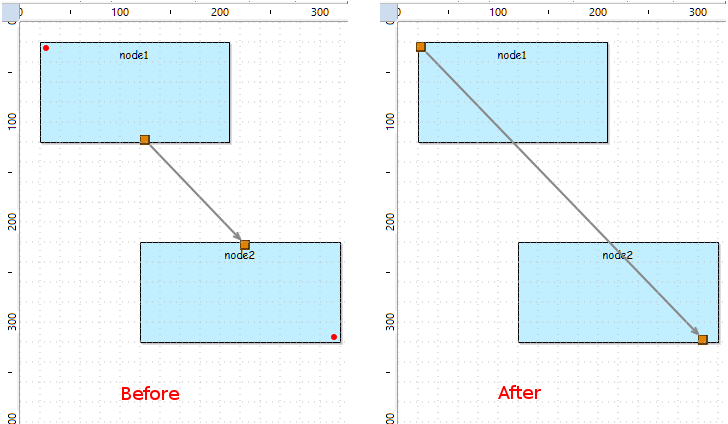

This document contains the release notes for recent major releases of Sirius. See also the release notes from previous versions for details about older releases.

org.eclipse.sirius.ext.gmf.runtime.gef.ui.figures.SiriusDefaultSizeNodeFigure has been added in plugin
org.eclipse.sirius.ext.gmf.runtime. The goal of the class is to workaround a
GMF bug. So if you have created class which inherits from
org.eclipse.gmf.runtime.gef.ui.figures.DefaultSizeNodeFigure, you must now use the new
SiriusDefaultSizeNodeFigure instead.
uid to all instances of type DRepresentation. This
uid is used to reference the DRepresentation from the DRepresentationDescriptor.
DRepresentationDescriptor.repPath has been changed to have
uid as fragment. The corresponding version, stored in attribute version of viewpoint:DAnalysis of the aird file, is
12.1.0.201707281200.
See this document for the complete list of message keys added or removed in Sirius 5.0.
A new mode (currently experimental) is available to load representations on demand and not during session opening. This feature implies to serialize Sirius representations in separate resources. This mode can be activated by setting the system property
createLocalRepresentationInSeparateResource at true. For more detail, see the developer documentation:
Representations lazy loading (experimental).
org.eclipse.sirius
org.eclipse.sirius.business.api.session.Session interface to retrieve the session an arbitrary
EObject is part of:
Optional<Session> s = Session.of(myObject);. It returns a
java.util.Optional<Session> so all the usual patterns apply, e.g.
Session.of(obj).ifPresent(s -> doSomething(s));.
org.eclipse.sirius.viewpoint.DRepresentationDescriptor.isLoadedRepresentation() has been added to know if the representation linked with this {@link DRepresentationDescriptor} is loaded. By default, all representations are held in the same resource than the DRepresentationDescriptor, in that case the method will always return true.
org.eclipse.sirius.business.api.session.danalysis.DAnalysisSession.allAnalyses() has been added in the interface to reflect the already existing
org.eclipse.sirius.business.internal.session.danalysis.DAnalysisSessionImpl.allAnalyses() implementation.
org.eclipse.sirius.business.api.dialect.DialectManager.getLoadedRepresentations(EObject, Session) has been added to get all loaded representations in the given session with the given EObject as target.
org.eclipse.sirius.business.api.dialect.DialectServices.getAllLoadedRepresentations(Session) has been added to get all loaded representations in the given session.
org.eclipse.sirius.business.api.helper.SiriusUtil.REPRESENTATIONS_FOLDER_NAME constant has been added. This is the default folder where representations file (*.srm) are located if the system property “createLocalRepresentationInSeparateResource” is set at true.
org.eclipse.sirius.tools.api.command.ui.UICallBack.shouldDeleteRepresentation(Set<DRepresentationDescriptor>) has been added to be called when the user interface should prompt for a choice about the representation deletion.
org.eclipse.sirius.business.api.query.SiriusReferenceFinder and
org.eclipse.sirius.business.api.query.EObjectQuery.getSiriusReferenceFinder() method to get it have been added. This API allows getting the DRepresentations or DRepresentationElements that reference the provided semantic object. It also allows getting the DRepresentationDescriptor which associated DRepresentation is or contains elements that reference the provided semantic object. This API will be useful for
representation lazy loading as it may, in the future, not need to load all not yet loaded representations. For now, the use of this API will load all not loaded representations.
org.eclipse.sirius.business.api.dialect.DialectServices.getRepresentationDescriptors(EObject, Session) has been moved to
org.eclipse.sirius.business.api.dialect.DialectManager.
org.eclipse.sirius.business.api.dialect.DialectServices.getAllRepresentationDescriptors(Session) has been moved to
org.eclipse.sirius.business.api.dialect.DialectManager.
org.eclipse.sirius.business.api.dialect.DialectServices.getRepresentationDescriptors(RepresentationDescription, Session) has been moved to
org.eclipse.sirius.business.api.dialect.DialectManager.
getRepresentationDescriptors(EObject, Session),
getAllRepresentationDescriptors(Session) and
getRepresentationDescriptors(RepresentationDescription, Session) have been removed from
AbstractRepresentationDialectServices. They are implemented in
DialectManagerImpl.
org.eclipse.sirius.business.api.dialect.DialectServices.getRepresentations(EObject, Session) has been moved to
org.eclipse.sirius.business.api.dialect.DialectManager
org.eclipse.sirius.business.api.dialect.DialectServices.getAllRepresentations(Session) has been moved to
org.eclipse.sirius.business.api.dialect.DialectManager
org.eclipse.sirius.business.api.dialect.DialectServices.getRepresentations(RepresentationDescription, Session) has been moved to
org.eclipse.sirius.business.api.dialect.DialectManager
getRepresentations(EObject, Session),
getAllRepresentations(Session) and
getRepresentations(RepresentationDescription, Session) have been removed from
AbstractRepresentationDialectServices. They are implemented in
DialectManagerImpl.
org.eclipse.sirius.common
org.eclipse.sirius.common.tools.api.util.LazyCrossReferencer.setEObjectToBeIgnored(Predicate<EObject>) has been added to filter inverse references to prevent some references resolution.
org.eclipse.sirius.common.tools.api.util.WorkspaceUtil.getFilesFromWorkspace(Collection<IProject>, String) signature has been modified in
getFilesFromWorkspace(Collection<IContainer>, String) to be more generic.
org.eclipse.sirius.diagram
org.eclipse.sirius.diagram.business.api.query.DDiagramQuery. This query,
getAllActivatedLayers, returns all the activated layers (transient or not) of the given diagram. It should replace
DDiagram.getActivatedLayers in several cases if you directly use it.
org.eclipse.sirius.diagram.ui
org.eclipse.sirius.diagram.ui.tools.api.preferences.SiriusDiagramUiPreferencesKeys:
PREF_SCALE_DIAGRAMS_ON_EXPORT,
PREF_MAXIMUM_EXPORT_BUFFER_SIZE,
PREF_MAXIMUM_EXPORT_BUFFER_SIZE_WINDOWS. They are used to control the auto-scaling behavior when exporting diagrams. Refer to the JavaDoc for the details.
org.eclipse.sirius.diagram.ui.tools.api.part.DiagramEditPartService, two new methods have been added:
setAllowDownScaling(boolean): when auto-scaling is enabled (which is controlled by the already existing
setAutoScalingEnabled()), this is used to control if down-scaling is allowed or not.
getScalingFactor(): after the export has been performed, this can be used to obtain the scaling factor that was effectively used.
org.eclipse.sirius.diagram.ui.business.api.DiagramExportResult has been added, which inherits from
ExportResult. It is returned by the
DialectManager.exportWithResult() methods when the representation exported is a diagram, and in addition to the information provided by
ExportResult gives access to the scaling factor that was used when exporting the diagram.
org.eclipse.sirius.diagram.ui.tools.api.preferences.SiriusDiagramUiPreferencesKeys.PREF_SHOW_SYNCHRONIZE_STATUS_DECORATOR has been added to say if the
synchronize status decorator must be shown or not.
checkShapesIntersect() has been added in
org.eclipse.sirius.diagram.ui.business.api.query.ConnectionEditPartQuery to check if source and target of the connection intersect (only intersect – not one contained in another).
org.eclipse.sirius.ext.emf.edit
org.eclipse.sirius.ext.emf.edit.EditingDomainServices does not use
Collection anymore as return type or parameter type in its services.
java.util.Collection has been replaced by
java.util.List. As mentioned in the
specifier documentation, it is recommended to use List or Set instead of Collection in java services signature.
org.eclipse.sirius.ui
org.eclipse.sirius.ui.tools.api.dialogs.AbstractExportRepresentationsAsImagesDialog a new method
isAutoScaleDiagram() has been added to indicate (once the dialog has been closed) if the user has requested to enable auto-scaling on diagram export.
org.eclipse.sirius.ui.tools.api.actions.export.ExportAction, a new method
setAutoScaleDiagram(boolean) to ask for automatic scaling of diagrams on export.
org.eclipse.sirius.ui.business.api.dialect.DialectUIServices, two new methods
exportWithResult() have been added. They are equivalent to the existing
export() methods (which return
void) except that they return an instance of the new type
org.eclipse.sirius.ui.business.api.dialect.ExportResult. This gives access to the list of all the actual files produced by the export operation. Note that in the case of the diagram dialect,
exportWithResult() actually returns a more specific
DiagramExportResult with additional diagram-specific information.
org.eclipse.sirius.ui.business.api.dialect.ExportFormat has a new attribute representing the scaling policy to use for diagram. It is defined by a new enumerated type
ExportFormat.ScalingPolicy which can have four different values:
WORKSPACE_DEFAULT,
AUTO_SCALING,
NO_SCALING,
AUTO_SCALING_IF_LARGER. Refer to the JavaDoc for details on their meanings.
org.eclipse.sirius.ui.tools.api.wizards.CreateEMFModelWizard is a new wizard that can be invoked to create instances of any metamodel. It will ask the end-user for a metamodel (
EPackage), a concrete type to instanciate as root element, and finally the local path of the file to create. See the class Javadoc for sample usage. Note that the first two pages of the wizard (EPackage and root type selection) can be customized through the
org.eclipse.sirius.common.package_meta_data extension point to provide user-oriented name and documentation for an EPackage, and to suggest specific EClasses as good root candidates.
org.eclipse.sirius.ui.tools.api.command.AbstractSWTCallback.shouldDeleteRepresentation(Set<DRepresentationDescriptor>) default implementation has been added to prompt the confirm dialog.
org.eclipse.sirius.ui.business.api.session.SessionEditorInput.SessionEditorInput(URI, URI, String, Session) has been added to provide the
DRepresentationDescriptor URI to retrieve the
DRepresentation from the
DRepresentationDescriptor.getRepresentation() method instead of performing a direct load.
org.eclipse.sirius.ui.editor
org.eclipse.sirius.ui.editor.api.pages. They are the following:
AbstractSessionEditorPage,
PageProvider,
PageUpdateCOmmand,
PositioningKind,
PageUpdateCommandFactory. These classes allow to provide custom pages to session editor instances.
org.eclipse.sirius.ui.editor.sessionEditorPageProvider has been added to allow custom page providing for session editor instances.
Sirius 5.0.1 is a maintenance release with only bugfixes and small tweaks to the UI of the aird editor.
package::Class syntax for domain classes and type names in the VSM is now fully supported and the new default. It means this syntax is interpreted by Sirius and completion is provided for it when the first
: character is entered. The legacy syntax
package.Class is still supported for compatibility.
See this document for the complete list of message keys added or removed in Sirius 5.0.
org.eclipse.sirius.common
org.eclipse.sirius.common.tools.api.util.SiriusCrossReferenceAdapterImpl.setFeatureToBeCrossReferencedWhiteList(Collection<EReference>) to set a white list of references that must be referenced even if the reference is derived.
org.eclipse.sirius.common.tools.api.util.SiriusCrossReferenceAdapterImpl.isIncluded(EReference) has been overridden to consider features in the white list.
org.eclipse.sirius.common.package_meta_data has been added. It can be used to associate user-oriented meta-data to Ecore metamodels, identified by their
nsURI: a user-oriented name/label (as opposed to the technical nsURI), a (short) description/documentation, and a list of suggested EClasses defined in the EPackage that are good candidates as root model elements. These meta-data are currently used only in the generic model creation wizard integrated in the aird editor.
org.eclipse.sirius.common.ui
org.eclipse.sirius.common.ui.tools.api.dialog.FeatureEditorDialog class has been removed; use the
org.eclipse.emf.edit.ui.celleditor.FeatureEditorDialog equivalent provided by EMF directly instead.
org.eclipse.sirius
createRepresentationInSeparateResource=true. That means all new representations will be saved, when this property is enabled, in a separate file with
*.srm extension.
org.eclipse.sirius.business.api.dialect.DialectServices.canCreate(EObject, RepresentationDescription, boolean) has been added to better control the checks done by already existing
org.eclipse.sirius.business.api.dialect.DialectServices.canCreate(EObject, RepresentationDescription) method. The new boolean allow to deactivate the check verifying that the viewpoint of the given description must be activated so the method can return true.
org.eclipse.sirius.viewpoint.description.DAnnotation.references feature has been added. It allows to have some information without having to search them into the entire model of the Sirius session. Ideally only elements from semantic resources of the session should be referenced or else it may broke the session behavior either because resolving too soon EObject in the session or because adding a resource that is not known by Sirius session.
org.eclipse.sirius.business.api.query.EObjectQuery.getImpactedRepDescriptorFromDAnnotationData() method has been added to help retrieve the
DRepresentationDescriptors which owned
DAnnotation are referencing a given
EObject with
DAnnotation.references.
org.eclipse.sirius.viewpoint.DRepresentationDescriptor#repPath attribute has been added to hold the representation path since the
org.eclipse.sirius.viewpoint.DRepresentationDescriptor#representation feature is derived. This attribute is not intended to be modified by client. You should use
org.eclipse.sirius.viewpoint.DRepresentationDescriptor.setRepresentation(DRepresentation) or
org.eclipse.sirius.viewpoint.DRepresentationDescriptor.updateRepresentation(DRepresentation) instead.
org.eclipse.sirius.viewpoint.DRepresentationDescriptor.updateRepresentation(DRepresentation) has been added to update the repPath attribute according to the given representation. This method is intended to be called if the representation instance is still the same but requires to recompute the repPath.
org.eclipse.sirius.business.api.query.FileQuery.isSrmFile() has been added to indicate if the file extension is dedicated to a file containing representations.
org.eclipse.sirius.dRepresentationLocationRule extension point has been added to customize the resource location of new representations. See
Provide representation location rule (experimental) for more details.
org.eclipse.sirius.business.api.session.danalysis.DRepresentationLocationRule interface has been added to provide a customized rule to the
org.eclipse.sirius.dRepresentationLocationRule extension point.
org.eclipse.sirius.business.api.helper.SiriusUtil.REPRESENTATION_FILE_EXTENSION constant has been added to reference the new *.srm extension.
org.eclipse.sirius.business.api.session.Session.getSrmResources() has been added to provide the list of representation resources (serialized as *.srm files by default).
org.eclipse.sirius.business.api.query.ResourceQuery.isAirdOrSrmResource() has been added to know whether the resource is a srm resource (
org.eclipse.sirius.business.api.query.ResourceQuery.isSrmResource()) or an aird resource.
org.eclipse.sirius.business.api.query.ResourceQuery.isSrmResource() has been added to know whether the resource contains a
DRepresentation as root element.
org.eclipse.sirius.diagram.ui.tools.api.migration.DiagramCrossReferencer.DiagramCrossReferencer(Collection<Resource>) constructor has been added to compute the cross references on a list of resources.
org.eclipse.sirius.modelOperationManager extension point has been addded. It allows the contribution of new types of
Model Operations which are then usable in modeler definitions (
*.odesign).
org.eclipse.sirius.viewpoint.DRepresentationDescriptor#representation feature is now derived, transient and volatile. The representation is compute by using the
org.eclipse.sirius.viewpoint.DRepresentationDescriptor#repPath attribute.
org.eclipse.sirius.business.api.query.DViewQuery.getAllContentInRepresentations(Predicate<? super EObject>) now takes a
java.util.Predicate (from Java 8) as argument instead of a
com.google.common.base.Predicate.
org.eclipse.sirius.ui.modelingprojectresourcelistener is no longer expected to be used. It is an internal extension point. Clients using this extension point to ignore some files as potential semantic models must now use the extension point
org.eclipse.sirius.resourceStrategy. This extension point existed before Sirius 5.0.0 but was not API. It becomes API with Sirius 5.0.0, see the
developer documentation for more details.
boolean isPotentialSemanticResource(IFile) and
boolean isLoadableModel(IFile, Session) of class
org.eclipse.sirius.ui.tools.api.views.modelexplorerview.resourcelistener.DefaultModelingProjectResourceListener, you can now create a
resourceStrategy of type
org.eclipse.sirius.business.api.resource.strategy.ResourceStrategy.ResourceStrategyType.SEMANTIC_RESOURCE and respectively override
boolean isPotentialSemanticResource(URI) and
boolean isLoadableModel(URI,Session). As a reminder, to get an URI from an IFile, you can use:
URI.createPlatformResourceURI(iFile.getFullPath().toString(), true). And to get an IFile from an URI, you can use:
ResourcesPlugin.getWorkspace().getRoot().getFile(new Path(uri.toPlatformString(true))).
boolean isRepresentationsModel(IFile) and
boolean isVsmModel(IFile) of class
org.eclipse.sirius.ui.tools.api.views.modelexplorerview.resourcelistener.DefaultModelingProjectResourceListener, they no longer exist. They correspond to core API and is not supposed to be overridden. They are accessible through API
org.eclipse.sirius.business.api.query.FileQuery.FileQuery(IFile).
org.eclipse.sirius.resourceStrategy are now APIs:
org.eclipse.sirius.business.api.resource.strategy.ResourceStrategyRegistry: Registry to have access to all overridable services through a
ResourceStrategy
org.eclipse.sirius.business.api.resource.strategy.ResourceStrategy: Interface implemented by all resource strategies
org.eclipse.sirius.business.api.resource.strategy.AbstractResourceStrategyImpl: Default implementation of above interface. All resource strategies contributed with the extension need to extend it.
org.eclipse.sirius.business.api.resource.strategy.LegacyReleaseResourceStrategyImpl (previously named
DefaultResourceStrategyImpl): A resource strategy with the code used before the optimization concerning the
org.eclipse.sirius.business.api.resource.strategy.ResourceStrategy.ResourceStrategyType.RELEASE_RESOURCE_AT_RESOURCESET_DISPOSE. It is not used but can be quickly contributed by someone that want the previous behavior (before Sirius 4.0.0 M6).
org.eclipse.sirius.business.api.control.SiriusUncontrolCommand with signature
SiriusUncontrolCommand(EObject, boolean, IProgressMonitor) has been removed; instead, use the alternate constructor with an additional explicit
boolean shouldEndBySaving parameter (set it to
true to obtain the same behavior as the removed constructor).
org.eclipse.sirius.business.api.dialect.DialectServices, methods
canCreateIdentifier and
createIdentifier have been removed.
org.eclipse.sirius.business.api.dialect.identifier package and all its content (
AbstractRepresentationElementIdentifier and
RepresentationElementIdentifier) have been removed.
org.eclipse.sirius.ui
org.eclipse.sirius.ui.business.api.viewpoint.ViewpointSelection.Callback:
selectViewpoint(Viewpoint, Session, boolean, Set<Viewpoint>, IProgressMonitor) and
deselectViewpoint(Viewpoint, Session, Set<Viewpoint>, IProgressMonitor). These methods add a new parameter that is a set of viewpoints compared to the same methods without these parameters. These set contains all viewpoints that will be deactivated/activated in addition of the one that is asked to be deactivated/activated. It allows the callback implementation to better handle viewpoint dependencies interaction by being able to know if missing dependencies will be activated or deactivated.
org.eclipse.sirius.ui.business.api.editor.ISiriusEditor has been added to gather
org.eclipse.sirius.ui.editor.SessionEditor and
org.eclipse.sirius.ui.business.api.dialect.DialectEditor under the same abstraction. It allows to provide
org.eclipse.sirius.ui.business.api.session.IEditingSession saving functionalities for session editor or any new editor that is not a dialect editor.
getSiriusEditors() has been added to interface
org.eclipse.sirius.ui.business.api.session.IEditingSession. It allows to retrieve all
org.eclipse.sirius.ui.business.api.editor.ISiriusEditor that are registered in the session.
org.eclipse.sirius.ui.business.api.dialect.DialectUIServices.refreshEditor(DialectEditor, IProgressMonitor) has been added to allow specifiers to do a full refresh of its dialect editor easily.
org.eclipse.sirius.ui.tools.api.color.VisualBindingManager.getDefaultFontWithRuntimeSizeAndFromLabelFormat(List<FontFormat>) has been added to allow to retrieve a font using the given format and the default Sirius font (arial) and the runtime height.
org.eclipse.sirius.ui.tools.api.color.VisualBindingManager.getFontFromNameAndLabelFormatAndWithDefaultSize(List<FontFormat>, String) has been added to allow to retrieve a font using the given format and the given font name and the runtime height.
org.eclipse.sirius.ui.tools.api.wizards.page.ViewpointsSelectionWizardPage.setBrowserMinWidth(int) has been added to allow modification of the minimum width (with default value “0”) of the browser part of the viewpoint selection wizard.
org.eclipse.sirius.ui.tools.api.wizards.page.ViewpointsSelectionWizardPage.setColumnWidthEquality(boolean) has been added to allow modification of column width equality (with default value “false”) of the root composite of the viewpoint selection wizard.
org.eclipse.sirius.ui.tools.api.color.VisualBindingManager.getDefaultFontWithRuntimeSizeAndFromLabelFormat(List<FontFormat>) has been added to allow to retrieve a font using the given format and the default Sirius font (arial) and the runtime height.
org.eclipse.sirius.ui.tools.api.color.VisualBindingManager.getFontFromNameAndLabelFormatAndWithDefaultSize(List<FontFormat>, String) has been added to allow to retrieve a font using the given format and the given font name and the runtime height.
org.eclipse.sirius.ui.tools.api.dialogs.AbstractExportRepresentationsAsImagesDialog.isExportDecorations() has been added to know if decorations are displayed in the exported image.
org.eclipse.sirius.ui.business.api.dialect.DialectUIServices.export(DRepresentation, Session, IPath, ExportFormat, IProgressMonitor, boolean) method has been added. Compared to the previous method signature, the boolean parameter
exportDecorations has been added to allow to choose if the diagram element decorations will be exported or not.
exportDecorations has been added to
org.eclipse.sirius.ui.tools.api.actions.export.ExportAction.ExportAction(Session, Collection<DRepresentation>, IPath, ImageFileFormat, boolean, boolean) constructor. It allows to choose if the diagram element decorations will be exported or not.
attachEditor(DialectEditor) from the interface
org.eclipse.sirius.ui.business.api.session.IEditingSession has its parameter type modified from
DialectEditor to the new abstraction
ISiriusEditor to provide saving capabilities with other editors than the dialect ones.
detachEditor(DialectEditor) from the interface
org.eclipse.sirius.ui.business.api.session.IEditingSession has its parameter type modified from
DialectEditor to the new abstraction
ISiriusEditor to provide saving capabilities with other editors than the dialect ones.
detachEditor(DialectEditor, boolean) from the interface
org.eclipse.sirius.ui.business.api.session.IEditingSession has its first parameter type modified from
DialectEditor to the new abstraction
ISiriusEditor to provide saving capabilities with other editors than the dialect ones.
org.eclipse.sirius.ui.tools.api.assist.TextContentProposalProvider.getContentContext(String, int) has been made protected instead of private to allow to use it for sub types.
org.eclipse.sirius.ui.tools.api.assist.TextContentProposalProvider.removeDuplicatedProposals(List<ContentProposal>) has been made protected instead of private to allow to use it in sub types.
org.eclipse.sirius.ui.tools.api.project.ModelingProjectManager.createLocalRepresentationsFile(IProject, IProgressMonitor) has its return type changed from
void to
Session to allow callers to have access to the newly created session directly.
org.eclipse.sirius.ui.tools.api.views.ViewHelper.getContentProvider() has been renamed into
createContentProvider() and now returns a new instance on each invocation.
org.eclipse.acceleo.ui.interpreter, which is available directly from the Sirius update-sites). The corresponding interface
org.eclipse.sirius.ui.tools.api.views.interpreterview.InterpreterView has been removed. Technically, the implementation code for the old
Model Request Interpreter view is still present if needed during the transition, but not exposed or used anywhere. It will be removed in a future version.
org.eclipse.sirius.diagram
org.eclipse.sirius.diagram.business.api.helper.decoration.DecorationHelper has been added. It provides
updateDecorations(List<Layer>) and
updateAllDecorations methods that allow to update only decorations in a diagram.
org.eclipse.sirius.diagram.business.api.refresh.IRefreshOverride.aroundRefresh(DDiagram) has been moved to
org.eclipse.sirius.diagram.business.api.refresh.IRefreshExtension to unify methods handling refresh extension under one interface.
org.eclipse.sirius.diagram.business.api.refresh.IRefreshExtension.aroundRefresh(DDiagram) has been modified with a default behavior that is the one before introduction of the method to avoid breaking compatibility.
org.eclipse.sirius.diagram.business.api.refresh.IRefreshOverride has been removed because its only method has been moved into
org.eclipse.sirius.diagram.business.api.refresh.IRefreshExtension interface
org.eclipse.sirius.diagram.business.internal.dialect.identifier package and all its content (
DiagramIdenttifier,
NodeIdentifier,
EdgeIdentifier,
NodeContainerIdentifier, and
NodeStyleIdentifier) have been removed.
org.eclipse.sirius.diagram.ui
org.eclipse.sirius.diagram.ui.business.api.query.ViewQuery.SPECIFIC_STYLES &
org.eclipse.sirius.diagram.ui.business.api.query.ViewQuery.VERTICAL_ALIGNMENT have been added to retrieve the initial label alignment of Notes from the Palette (see
user-visible changes ). Currently the vertical alignment can not be changed (potential new feature later).
org.eclipse.sirius.diagram.ui.graphical.edit.policies.SiriusDecoratorEditPolicy has been added to improve the behavior of decorator selection.
IDecorator to decorate EditPart in diagram. That allows Sirius to manage the relative positioning between decorations.
org.eclipse.sirius.diagram.ui.tools.api.decoration.SiriusDecorationDescriptorProvider represents a provider able to give the decoration descriptors.
org.eclipse.sirius.diagram.ui.tools.api.decoration.AbstractSiriusDecorationDescriptorProvider is an abstract class that can be inherited to implement
SiriusDecorationDescriptorProvider.
org.eclipse.sirius.diagram.ui.tools.api.decoration.DecorationDescriptor is a simple POJO that contains information needed to display decoration.
org.eclipse.sirius.diagram.ui.tools.api.decoration.SiriusDecorationProviderRegistry allows to register and get
SiriusDecorationDescriptorProvider.
SiriusDiagramUiPreferencesKeys.PREF_AUTHORIZE_DECORATION_OVERLAP has been added in
org.eclipse.sirius.diagram.ui.tools.api.preferences.SiriusDiagramUiPreferencesKeys. If true, the overlap is authorized between decoration group on diagram element.
org.eclipse.sirius.diagram.ui.provider.DiagramUIPlugin.Implementation.DynamicDiagramUIPreferences and the method
org.eclipse.sirius.diagram.ui.provider.DiagramUIPlugin.Implementation.getDynamicPreferences() have been added to have good performances in getting the preference value.
SiriusDiagramUiPreferencesKeys.PREF_PRINT_DECORATION has been added in
org.eclipse.sirius.diagram.ui.tools.api.preferences.SiriusDiagramUiPreferencesKeys. If true, the decorations of the diagram elements of a diagram will be printed, when printing a diagram.
org.eclipse.sirius.diagram.ui.tools.api.part.DiagramEditPartService.DiagramEditPartService class which can be used to export diagrams as images is now automatically adapting the output resolution for raster image based on maximum buffer size specified through the
plugin.propeties file of the
org.eclipse.sirius.diagram.ui plugin. This leads to a noticeable increase of the export image size (you can expect a 10 factor on small diagrams) and the method will no longer fail with OutOfMemory errors as bigger diagrams will lead to a lower output resolution. Implementers using this class can override the
DiagramEditPartService.getMaximumTotalSize() method to return their own limit or
DiagramEditPartService.getExportResolutionFactor(DiagramEditPart, SiriusDiagramImageGenerator) and return
1.0 to get back to the previous behavior.
org.eclipse.sirius.diagram.ui.tools.api.format.SiriusFormatDataManagerWithMapping that are
getFormatData(FormatDataKey, RepresentationElementMapping) and
addFormatData(FormatDataKey, RepresentationElementMapping, AbstractFormatData) have been moved into the interface
org.eclipse.sirius.diagram.ui.tools.api.format.SiriusFormatDataManager to reduce interface numbers for less complexity.
org.eclipse.sirius.diagram.ui.tools.api.format.SiriusFormatDataManagerWithMapping that are
getFormatData(FormatDataKey, RepresentationElementMapping) and
addFormatData(FormatDataKey, RepresentationElementMapping, AbstractFormatData) have been moved into the interface
org.eclipse.sirius.diagram.ui.tools.api.format.SiriusFormatDataManager to reduce interface numbers for less complexity.
getFormatData(FormatDataKey key) and
addFormatData(FormatDataKey key, AbstractFormatData formatData) have been removed from interface
org.eclipse.sirius.diagram.ui.tools.api.format.SiriusFormatDataManager because they were deprecated.
org.eclipse.sirius.diagram.ui.tools.api.format.SiriusFormatDataManagerWithMapping has been removed because all its methods have been moved into interface
org.eclipse.sirius.diagram.ui.tools.api.format.SiriusFormatDataManager
org.eclipse.sirius.diagram.ui.tools.api.decoration.AbstractSiriusDecorator is removed because now useless.
getFormatData(FormatDataKey key) and
addFormatData(FormatDataKey key, AbstractFormatData formatData) have been removed from interface
org.eclipse.sirius.diagram.ui.tools.api.format.SiriusFormatDataManager because they were deprecated.
org.eclipse.sirius.diagram.ui.tools.api.format.SiriusFormatDataManagerWithMapping has been removed because all its methods have been moved into interface
org.eclipse.sirius.diagram.ui.tools.api.format.SiriusFormatDataManager
org.eclipse.sirius.table
DTableElementSynchronizer
EClass has been removed from the table meta-model. It only defined
EOperations and has been replaced with an equivalent (internal) plain Java class.
org.eclipse.sirius.tree.ui
org.eclipse.sirius.tree.ui.tools.api.preferences.SiriusTreeUiPreferencesKeys has been added with the enum value
SiriusTreeUiPreferencesKeys.PREF_ALWAYS_USE_STANDARD_FONT_SIZE. This enum value is the preference when true allowing to use runtime font height when displaying Sirius tree editor’s items instead of the one specified in the VSM.
org.eclipse.sirius.ui.editor
This plugin is new in Sirius 5.0. It provides a session editor showing loaded models, representations and viewpoint activation status of the session. It has functionalities allowing to change the viewpoint activation status, to create/remove representations or to load unload external models. The graphical block showing loaded models is integrated with CNF. You can provide content extension to its viewer by using an id matching the pattern
org.eclipse.sirius.ui.editor.graphicalcomponents.semanticModelsViewer.contentExtension.*. You also can provide action extension by using an id matching the pattern
org.eclipse.sirius.ui.editor.graphicalcomponents.semanticModelsViewer.actionExtension.*. The extension will be selectable/unselectable by using a
Customize View button on the models block header.
org.eclipse.sirius.properties.core
org.eclipse.sirius.properties.core.internal.converter.ViewDescriptionConverter has been moved as an API to
org.eclipse.sirius.properties.core.api.ViewDescriptionConverter.
org.eclipse.sirius.properties.core.api.
org.eclipse.sirius.properties.core.internal.SiriusInterpreter has been moved as an API to
org.eclipse.sirius.properties.core.api.SiriusInterpreter. This class could be used by those who want to create custom model operations using the Properties framework.
org.eclipse.sirius.properties.core.api.SiriusDomainClassTester has been added as an API for those who want to create custom model operations using the Properties framework.
org.eclipse.sirius.ext.emf.edit.EditingDomainServices.createInstance(EClass) has been added to allow the creation of a new instance from an EClass in the interpreters.
org.eclipse.sirius.properties.defaultrules.
org.eclipse.sirius.ui.properties
org.eclipse.sirius.ui.properties to the newly created plugin
org.eclipse.sirius.properties.core. It includes all the APIs and both extension points.
org.eclipse.sirius.editor.properties
org.eclipse.sirius.editor.properties.sections.description.representationdescription the class
RepresentationDescriptionMetamodelsUpdater has been replaced by
DescriptionMetamodelsUpdater which can now be used with any EObject with a many-valued EReference to EPackages. The behavior of the class
RepresentationDescriptionMetamodelPropertySectionSpec has been transfered to an abstract class independent of
RepresentationDescription named
AbstractMetamodelPropertySectionSpec. Those classes are now used for the edition of the metamodels of both the Properties view description and the various representations.
org.eclipse.sirius.tests.junit.support
org.eclipse.sirius.tests.support.api.TestsUtil.setTargetPlatform() has been added to allow to load a PDE target platform according to all known OSGi bundles. It is useful to compile a plug-in in the execution runtime of the tests.
org.eclipse.sirius.tests.support.api.OpenedSessionsCondition has been extracted from a junit test to be used by multiple junit tests. It allows to wait until a session is in opened state.
org.eclipse.sirius.tests.swtbot.support
getTreeItem(SWTBotTreeItem[], String, boolean, boolean) has been added in
org.eclipse.sirius.tests.swtbot.support.utils to retrieve recursively a
SWTBotTreeItem in a
SWTBotTreeItem array. Compared to
getTreeItem(SWTBotTreeItem[], String), it adds the capability to control if the search must be done on enabled items or enabled and disabled items and if the tree must be expanded during the search to check non displayed items.
org.eclipse.sirius.tests.swtbot.support.api.editor.SWTBotSiriusDiagramEditor.dragCentered(String, Class<? extends EditPart>, int, int) improving the dragCentered method by adding the aimed Class in parameter.
mouseDragWithKey(int, int, int, int, int) in classes
org.eclipse.sirius.tests.swtbot.support.api.editor.SWTBotSiriusDiagramEditor,
org.eclipse.sirius.tests.swtbot.support.api.editor.SWTBotSiriusGefViewer and
org.eclipse.sirius.tests.swtbot.support.api.widget.SWTBotSiriusFigureCanvas. This allows to correctly wait the end of the drag’n’drop.
final AtomicBoolean dragFinished = new AtomicBoolean(false);
editor.dragWithKey(start.x, start.y, endpoint.x, endpoint.y, SWT.F3, dragFinished);
// Wait that the drag is done (the async Runnable simulating the
// drag)
bot.waitUntil(new ICondition() {
@Override
public boolean test() throws Exception {
return dragFinished.get();
}
@Override
public void init(SWTBot bot) {
}
@Override
public String getFailureMessage() {
return "The drag'n'drop operation has not finished.";
}
});
// Wait that the figures are redrawn. In a fast environment, figures
// are not really redrawn and the rest of the test is not reliable.
SWTBotUtils.waitAllUiEvents();
org.eclipse.sirius.diagram.ui.tools.api.format.SiriusFormatDataManagerWithMapping class has been added to handle copy/paste format with mapping information when an element target of a format pasting has many source diagram format corresponding to its key. In this case, we use the mapping information to get the more precise data format. And if no result matched, then we return the first found by using the key.
org.eclipse.sirius.diagram.ui.tools.api.format.SiriusFormatDataManagerWithMapping.getFormatData(FormatDataKey, RepresentationElementMapping) method has been added to retrieve during format pasting the data format corresponding to the given key and mapping when more than one result correspond to the key. If no result matches the mapping, then the first result found by using the key is returned.
org.eclipse.sirius.diagram.ui.tools.api.format.SiriusFormatDataManagerWithMapping.addFormatData(FormatDataKey, RepresentationElementMapping, AbstractFormatData) method has been added to allow data format manager to register data format with mapping information when copying format.
org.eclipse.sirius.diagram.ui.tools.api.format.SiriusFormatDataManager.getFormatData(FormatDataKey) It is replaced by
org.eclipse.sirius.diagram.ui.tools.api.format.SiriusFormatDataManagerWithMapping.getFormatData(FormatDataKey, RepresentationElementMapping) to better handle copy/paste format cases.
org.eclipse.sirius.diagram.ui.tools.api.format.SiriusFormatDataManager.addFormatData(FormatDataKey, AbstractFormatData) It is replaced by
org.eclipse.sirius.diagram.ui.tools.api.format.SiriusFormatDataManagerWithMapping.addFormatData(FormatDataKey, RepresentationElementMapping, AbstractFormatData) to better handle copy/paste format cases.
org.eclipse.sirius.table.business.api.helper.TableHelper.getEStructuralFeature(DLine, DColumn) method has been added to retrieve the EStructuralFeature associated to a table column.
UICallBack in which you can have an UI feedback letting you choose if you want to open the session anyway. Warning: if you choose to proceed, there is no guarantee that the resulting session will be usable. It may even lead to data loss or corruption; use at your own risk.
If a viewpoint has been defined with a more recent version of Sirius than the one you are using, the
ViewpointRegistry will not register it and a warning is logged in the error log view to inform the user.
displayExpression, if blank the result of the value expression will be used after a call to the method
java.lang.Object#toString().
preconditionExpression, which behaves in the same way as preconditions for mappings on representation descriptions.
fontSize and
labelFontSize have been renamed into
fontSizeExpression and
labelFontSizeExpression since both of them were already treated as expression.
Domain Class Expression in
DynamicMappingFor elements (in properties views definitions) has been renamed into
Iterable Expression.
org.eclipse.sirius.diagram.ui.layoutDataManager is deprecated. It is replaced by the new extension point
org.eclipse.sirius.diagram.ui.formatDataManager. The deprecated extension point will be removed in the next 5.0 Sirius major release. Several classes associated with this deprecated extension point are also deprecated (see Developer-Visible Changes for details).
org.eclipse.sirius.viewpoint.DView.getOwnedRepresentationDescriptors() has been added as a wrapper of the
DRepresentation. The
DRepresentationDescriptor is contained by the
DView and the
DRepresentationDescriptor have a reference to the
DRepresentation. In this step, the main impact is that the Sirius common navigator does not display the
DRepresentation anymore but the
DRepresentationDescriptor instead. All the actions and commands are then based on
DRepresentationDescriptor.
org.eclipse.sirius.viewpoint.DView.getOwnedRepresentations() has been removed. The
DRepresentation is now created as root element of the representations resource. The main impact is on the core of Sirius but also potentially on client Sirius customization. Each peace of code that makes the supposition that the
DView is the container of the
DRepresentation must be reworked. The code using methods in the following list may be concerned by the rework:
EObject.eContainer(). If the object is a
DRepresentation, its container is now null.
EcoreUtil.getRootContainer(xxx). The root container of a DDiagramElement is the
DRepresentation and not the
DAnalysis any more.
EcoreUtil.isAncestor(xxx). the
DView is not an ancestor of a
DRepresentation (or its content) anymore.
org.eclipse.sirius.business.api.query.DViewQuery.getLoadedRepresentations() replaces the removed
DView.getOwnedRepresentations() method. It provides all the loaded representations holds by a
DView. In this step, all that representations are always loaded as they are into the .aird resource.
org.eclipse.sirius.business.api.query.DViewQuery.getAllContentInRepresentations(final Predicate<? super EObject>) provides the content of a
DView according to a predicate.
org.eclipse.sirius.business.api.query.DRepresentationQuery.getRepresentationDescriptor() provides the
DRepresentationDescriptor which references the
DRepresentation.
org.eclipse.sirius.business.api.query.EObjectQuery.getDAnalysis() allows to retrieve a DAnalysis from a
DRepresentationElement
org.eclipse.sirius
org.eclipse.sirius.interpretedExpressionQueryProvider (with the associated new interface
org.eclipse.sirius.business.api.dialect.description.IInterpretedExpressionQueryProvider) allows external contribution of
IInterpretedExpressionQuery specific to some particular expression occurrences in the VSM. This is used in particular for VSM extensions which do not fit well into the hard-coded assumptions about
IInterpretedExpressionQuery. In Sirius 4.1, this is used to add completion and validation support for expressions used in properties views descriptions.
org.eclipse.sirius.business.api.migration.AirdResourceVersionMismatchException exception has been added to cancel Sirius session opening due to an .aird version mismatch, i.e. when one the of the loaded Representation resources is coming from a newer Sirius release.
org.eclipse.sirius.viewpoint.DView.getOwnedRepresentationDescriptors() has been added as the first step to save the DRepresentation in its own resource. In this step, the DRepresentationDescriptor life cycle is the same as the associated DRepresentation.
org.eclipse.sirius.business.api.dialect.command.RenameRepresentationCommand
org.eclipse.sirius.business.api.dialect.command.DeleteRepresentationCommand
org.eclipse.sirius.business.api.dialect.command.MoveRepresentationCommand
org.eclipse.sirius.business.api.dialect.command.CopyRepresentationCommand
getAvailableRepresentationDescriptions(Collection<Viewpoint>, EObject),
getAllRepresentationDescriptors(Session ),
getRepresentationDescriptors(EObject, Session) and
getRepresentationDescriptors(RepresentationDescription, Session ) have been added in
org.eclipse.sirius.business.api.dialect.DialectServices and implemented in
org.eclipse.sirius.business.api.dialect.AbstractRepresentationDialectServices. These methods are used, instead of their equivalent with DRepresentation, for every functionality which relies on
DRepresentationDescriptor instead of
DRepresentation such as actions, wizards or views.
org.eclipse.sirius.business.api.dialect.AbstractRepresentationDialectServices.isSupported(DRepresentationDescriptor) has been added because actions, wizards or views that were related to
DRepresentation are now related to
DRepresentationDescriptor.
org.eclipse.sirius.ui.business.api.dialect.DialectUIServices.canHandle(DRepresentationDescriptor) has been added because actions, wizards or views that were related to
DRepresentation are now related to
DRepresentationDescriptor.
org.eclipse.sirius.ui.business.api.dialect.DialectUIManager.canExport(DRepresentationDescriptor, ExportFormat) has been added because actions, wizards or views that were related to
DRepresentation are now related to
DRepresentationDescriptor.
org.eclipse.sirius.business.api.query.DRepresentationQuery.getRepresentationDescriptor() has been added to retrieve the
DRepresentationDescriptor that references the
DRepresentation.
org.eclipse.sirius.business.api.session.CustomDataConstants.DREPRESENTATION_DESCRIPTOR_FROM_DESCRIPTION and
org.eclipse.sirius.business.api.session.CustomDataConstants.DREPRESENTATION_DESCRIPTOR have been added. They are used to get or put
DRepresentationDescriptor in the model managed by the
Session through the
org.eclipse.sirius.business.api.session.SessionService.putCustomData(String, EObject, EObject) and
SessionService.getCustomData(String, EObject) methods.
org.eclipse.sirius.business.api.query.EObjectQuery.getDAnalysis() has been added to retrieve a DAnalysis from a
DRepresentationElement
org.eclipse.sirius.business.api.session.danalysis.DAnalysisSessionHelper.findContainerForAddedRepresentation(DAnalysis, DRepresentation) has been changed to
findDViewForRepresentationDescription(DAnalysis , final RepresentationDescription) because that API was previously badly defined.
org.eclipse.sirius.business.api.dialect.DialectServices.deleteRepresentation(DRepresentation, Session) has been changed to
deleteRepresentation(DRepresentationDescriptor, Session) because now the
DRepresentationDescriptor is the entry point to delete the
DRepresentation and itself.
DRepresentationDescriptor is now the entry point to move, control or uncontrol a
DRepresentation instead of the
DRepresentation itself. Accordingly, the return type or parameter of the followings have changed to switch from
DRepresentation to
DRepresentationDescriptor
org.eclipse.sirius.business.api.control.SiriusControlCommand
org.eclipse.sirius.business.api.dialect.command.MoveRepresentationCommand.MoveRepresentationCommand(Session, DAnalysis, Collection<DRepresentationDescriptor>)
org.eclipse.sirius.business.api.session.danalysis.DAnalysisSession.moveRepresentation(DAnalysis, DRepresentationDescriptor)
org.eclipse.sirius.business.api.session.danalysis.DAnalysisSessionHelper.updateModelsReferences(DView) has replaced
updateModelsReferences(DAnalysis, Iterator<DSemanticDecorator>) because it is more suited to the client needs.
org.eclipse.sirius.ui
org.eclipse.sirius.ui.business.api.dialect.HierarchyLabelProvider has been added to provide a generic label provider for VSM model element giving hierarchical label. This label provider replaces the one returned by deprecated method
DialectUIServices.getHierarchyLabelProvider().
AbstractSWTCallback provides a default implementation of
UICallBack.askSessionReopeningWithResourceVersionMismatch() method to give feedback about version mismatch and give the choice to reopen session despite a potential corruption.
org.eclipse.sirius.ui.tools.api.control.SiriusControlHandler.getRepresentationsToMove(Shell, Session, EObject) and
SiriusControlHandler.collectExistingRepresentations have been renamed to
getRepresentationDescriptorsToMove(Shell, Session, EObject) and
SiriusControlHandler.collectExistingRepresentationDescriptors. The return type of both that methods and
SiriusControlHandler.askUserWhichRepresentationToSplit has been changed to
DRepresentationDescriptor as
DRepresentationDescriptor is the entry point to work with a
DRepresentation instead of DRepresentation itself.
org.eclipse.sirius.ui.business.api.dialect.DialectUIServices.getHierarchyLabelProvider() has been deprecated in favor of generic label provider
HierarchyLabelProvider.
org.eclipse.sirius.diagram
org.eclipse.sirius.diagram.business.api.diagramtype.IDiagramDescriptionProvider.allowsCopyPasteFormat(DSemanticDecorator) has been added in replacement of
allowsCopyPasteLayout(DSemanticDecorator) that is now deprecated. This 2 methods must return the same result.
allowsCopyPasteLayout(DSemanticDecorator) will be removed in the new major version.
org.eclipse.sirius.diagram.ui
EDGE_SNAP_BACK has been added in class
org.eclipse.sirius.diagram.ui.tools.api.ui.actions.ActionIds. It corresponds to the new snap back label action id that is present on edges.
org.eclipse.sirius.diagram.ui.tools.api.layout.SiriusLayoutDataManager (and also in
org.eclipse.sirius.diagram.ui.tools.api.layout.AbstractSiriusLayoutDataManager):
applyFormat(IGraphicalEditPart): Apply the current format data (layout data and style data) to the given edit part.
applyStyle(IGraphicalEditPart): Apply the current style data to the give edit part.
org.eclipse.sirius.diagram.ui.tools.api.editor.tabbar.AbstractTabbarContributor:
createCopyFormatContribution(IDiagramWorkbenchPart): In replacement of
createCopyLayoutContribution(IDiagramWorkbenchPart) that is now deprecated.
createPasteFormatContribution(IDiagramWorkbenchPart): In replacement of
createPasteLayoutContribution(IDiagramWorkbenchPart) that is now deprecated.
org.eclipse.sirius.diagram.ui.tools.api.ui.actions.ActionIds:
COPY_FORMAT: Action contribution id for the copy format. It replaces the old
COPY_LAYOUT.
PASTE_FORMAT: Action contribution id for the paste format. It does not replace the old
PASTE_LAYOUT. The paste format paste the layout and the style. The paste layout only paste layout.
PASTE_STYLE: Action contribution id for the paste style.
org.eclipse.sirius.diagram.ui.business.api.query.NodeQuery.isDescendantOf(View) has been added to know if a view is a descendant of another view.
org.eclipse.sirius.diagram.ui.business.api.query.ViewQuery.getAncestor(int...) has been added to retrieve the first ancestor of the view, or itself, that has at least one of the visualID passed as parameter.
PREF_SHOW_LINK_EDGE_LABEL_ON_SELECTION has been added in
org.eclipse.sirius.diagram.ui.tools.api.preferences.SiriusDiagramUiPreferencesKeys. It corresponds to the preference shown in
Sirius/Sirius Diagram/Connections Eclipse preferences.
org.eclipse.sirius.diagram.ui.tools.api.figure.SiriusWrapLabelWithAttachment is a specific
SiriusWrapLabel that allows to show an attachment between the label and its edge.
org.eclipse.sirius.diagram.ui.tools.api.requests.StraightenToRequest, has been added to handle the new
Straighten to actions. The corresponding id has also been added:
org.eclipse.sirius.diagram.ui.tools.api.requests.RequestConstants.REQ_STRAIGHTEN.
org.eclipse.sirius.diagram.ui.tools.api.ui.actions.ActionIds:
STRAIGHTEN_TO_TOP: For
Straighten to top action,
STRAIGHTEN_TO_BOTTOM: For
Straighten to bottom action,
STRAIGHTEN_TO_LEFT: For
Straighten to left action,
STRAIGHTEN_TO_RIGHT: For
Straighten to right action.
org.eclipse.sirius.diagram.ui.tools.api.image.DiagramImagesPath for the icon path of the four new straighten actions.
org.eclipse.sirius.diagram.ui.tools.api.layout.AbstractSiriusLayoutDataManager is deprecated, use
org.eclipse.sirius.diagram.ui.tools.api.format.AbstractSiriusFormatDataManager instead.
org.eclipse.sirius.diagram.ui.tools.api.layout.ILayoutDataManagerProvider is deprecated, use
org.eclipse.sirius.diagram.ui.tools.api.format.IFormatDataManagerProvider instead.
org.eclipse.sirius.diagram.ui.tools.api.layout.LayoutDataHelper is deprecated, use
org.eclipse.sirius.diagram.ui.tools.api.format.FormatDataHelper instead.
org.eclipse.sirius.diagram.ui.tools.api.layout.LayoutDataKey is deprecated, use
org.eclipse.sirius.diagram.ui.tools.api.format.FormatDataKey instead.
org.eclipse.sirius.diagram.ui.tools.api.layout.SiriusLayoutDataManager is deprecated, use
org.eclipse.sirius.diagram.ui.tools.api.format.SiriusFormatDataManager instead.
org.eclipse.sirius.diagram.ui.tools.api.layout.SiriusLayoutDataManagerForSemanticElementsFactory is deprecated, use
org.eclipse.sirius.diagram.ui.tools.api.format.SiriusFormatDataManagerForSemanticElementsFactory instead.
HierarchyLabelProvider_elementWihtoutNameLabel has been removed from the
org.eclipse.sirius.diagram.ui plug-in’s
Messages class, and moved into the
org.eclipse.sirius.ui's
Messages class.
org.eclipse.sirius.ext.gmf.runtime
SiriusSnapFeedbackPolicy has been copied from
org.eclipse.sirius.ext.gef.editpolicies to
org.eclipse.sirius.ext.gmf.runtime.editpolicies. The old class in plug-in
org.eclipse.sirius.ext.gef is deprecated and will be removed in the next version.
org.eclipse.sirius.tests.junit.support
getRepresentationDescriptors(final String),
getRepresentationDescriptors(final String , final Session ) and
getRepresentationDescriptorFromRepresentation(DRepresentation) have been added in class
org.eclipse.sirius.tests.support.api.SiriusTestCase to adapt tests considering the
DView.ownedRepresentationDescriptors addition.
org.eclipse.sirius.tests.swtbot.support
mouseScrollWithKey(int, int, int, int), has been added in classes
org.eclipse.sirius.tests.swtbot.support.api.editor.SWTBotSiriusDiagramEditor,
org.eclipse.sirius.tests.swtbot.support.api.editor.SWTBotSiriusGefViewer and
org.eclipse.sirius.tests.swtbot.support.api.widget.SWTBotSiriusFigureCanvas to allow testing events occurring after a mouse scroll combined to a keyboard key pressed at a given absolute position.
org.eclipse.sirius.properties
domainClassExpression has been renamed into
iterableExpression.
fontSize and
labelFontSize have been renamed into
fontSizeExpression and
labelFontSizeExpression since both of them were already treated as expression.
org.eclipse.sirius.ui.properties
org.eclipse.sirius.ui.properties.api in order to help with the transformation of the description of custom widgets. The class
AbstractDescriptionConverter can now be used as superclass for all the converters. The classes
DefautDescriptionConverter,
DefautStyleDescriptionConverter and
DefautDescriptionWithInitialOperationConverter, now accessible, should handle most of the use cases.
org.eclipse.sirius.ecore.extender
org.eclipse.sirius.ecore.extender.business.api.permission.exception.LockedInstanceException.PERMISSION_ISSUE_MESSAGE has been modified. You should now use the
MessageFormat. Example:
LockedInstanceException.PERMISSION_ISSUE_MESSAGE + getText(lockedElements) must be replaced by
MessageFormat.format(LockedInstanceException.PERMISSION_ISSUE_MESSAGE, getText(lockedElements)).
org.eclipse.sirius.ecore.extender.business.api.accessor.ModelAccessorsRegistry has been refactored to avoid problem with
ModelAccessor lifecycle. The constructor has no longer a parameter.
IPermissionAuthority, the properties view will not be editable if this locked object is selected from the Model Explorer view.


Apply Appearance Properties action has been modified to use the last selected element as base style instead of the first one.
org.eclipse.sirius.properties.feature.feature.group): needed at runtime for deployed modelers which have properties views defined in their specification.
org.eclipse.sirius.specifier.properties.feature.feature.group): provides support for editing the configuration model directly inside the VSM editor and the specifier documentation.
Once this is done, you can find the actual documentation in the Sirius Specifier Manual, under the Properties View section.
%myUniqueKey in the VSM, and define the value in the
Viewpoint Specification Project's
plugin.properties (for the default value), or
plugin_XX.properties for locale
XX. The underlying mechanism is the same as for Eclipse/OSGi plug-ins, so translations can even be contributed by physically separate plug-in fragments. See
the corresponding section in the documentation for more details.
org.eclipse.sirius.ext.emf.edit.EditingDomainServices (from plug-in
org.eclipse.sirius.ext.emf.edit) has been added with a complete set of service methods to leverage most of the features of the “EMF Edit” framework, for example the various
Item Providers associated to semantic elements. See
the documentation for details.
filter() or
oclIsKindOf() requires to explicitly add the domain meta-models plug-ins to the dependencies of the
Viewpoint Specification Project. The documentation has been modified to recommend this.
EEnum attribute, like
labelFormat, worked with a value expression using a Java service returning a
EEnumLiteral. It is now forbidden. You must return an
Enumerator. The documentation about
Styles Customization now details this case.
BorderSizeComputationExpression migration has been corrected to recursively handle the sub container mappings. VSM created or migrated with Sirius 3.1.0, 3.1.1 or 3.1.2 might require a manual modification for the style descriptions of sub container mappings with border size computation equals to 0 as we cannot determine if they were added (or updated) after or before the migration: starting with Sirius 3.1.0, no border will be displayed for a 0 pixel value whereas with older version container always had at least a 1 pixel border.
ITabbarContributor through the
org.eclipse.sirius.diagram.ui.tabbarContributor extension-point. See the
developer documentation for more details.
org.eclipse.sirius.diagram.bundledImageShape extension-point. See the
developer documentation for more details.
org.eclipse.sirius
org.eclipse.sirius.ui.business.api.session.SessionEditorInput.getStatus() has been added to have the status about session opening, i.e. if it has been correctly opened, cancelled or an exception has occurred.
org.eclipse.sirius.business.api.helper.task.TaskHelper.buildTaskFromModelOperation(EObject, ModelOperation) has been added, which does not require to specify a
DRepresentation in the context. It allows the creation of a task which executes a behavior specified by
ModelOperations outside of the context of a specific representation, provided the
ModelOperations work in that context.
org.eclipse.sirius.viewpoint.description.TypedVariable has been created.
org.eclipse.sirius.viewpoint.description.InteractiveVariableDescription has been created as tag interface for variables that require user interaction to be valued.
org.eclipse.sirius.tools.api.command.ui.UICallBack.askForTypedVariable(List<TypedVariable>, List<String>) has been created.
org.eclipse.sirius.tools.api.command.ui.NoUICallback.askForTypedVariable(List<TypedVariable>, List<String>) has been created.
org.eclipse.sirius.business.api.dialect.DialectServices.getRequiredViewpoints(DRepresentation) has been added to have mean to get required viewpoints to use a representation.
org.eclipse.sirius.business.api.dialect.AbstractRepresentationDialectServices.getRequiredViewpoints(DRepresentation) has been added to have a default implementation of
DialectServices.getRequiredViewpoints(DRepresentation) method.
org.eclipse.sirius.business.api.dialect.AbstractRepresentationDialectServices.isRelatedViewpointSelected(Session, RepresentationDescription) protected method has been added to check if a
RepresentationDescription is usable in the context of the specified session.
org.eclipse.sirius.tools.api.command.ui.UICallBack.askForDetailName(String, String, String) method has been added to replace the deprecated
org.eclipse.sirius.tools.api.command.ui.UICallBack.askForDetailName(String, String). This method now uses the description name as title for the wizard. This new method has been implemented by
org.eclipse.sirius.ui.tools.api.command.AbstractSWTCallback and
org.eclipse.sirius.tools.api.command.ui.NoUICallback.
org.eclipse.sirius.ui.tools.api.project.ModelingProjectManager.loadAndOpenRepresentationsFile(URI, boolean) has been added to specify if job used to open a session must be considered as launched by the user or not, because by default with
ModelingProjectManager.loadAndOpenRepresentationsFile(URI) the job was not considered as launched by the user.
org.eclipse.sirius.viewpoint.description.tool.SelectModelElementVariable now implements
org.eclipse.sirius.viewpoint.description.InteractiveVariableDescription.
org.eclipse.sirius.viewpoint.description.tool.AbstractVariable has been moved to
org.eclipse.sirius.viewpoint.description.AbstractVariable.
org.eclipse.sirius.viewpoint.description.tool.SubVariable has been moved to
org.eclipse.sirius.viewpoint.description.SubVariable.
org.eclipse.sirius.business.api.modelingproject.ModelingProject.getMainRepresentationsFileURI() methods no more update workspace resource about markers, now this must be done in caller on IllegalArgumentException catch in a workspace aware operation.
org.eclipse.sirius.business.api.dialect.command.RefreshRepresentationsCommand.canExecute() now returns false if a
DRepresentation cannot be refreshed, by calling
DialectManager.canRefresh(DRepresentation).
org.eclipse.sirius.business.api.session.danalysis.DAnalysisSessionHelper now return a
fr.obeo.dsl.viewpoint.DView instead of a
fr.obeo.dsl.viewpoint.DRepresentationContainer: *
findContainer(EObject, Viewpoint, Collection<DAnalysis>, DAnalysisSelector),
findContainerForAddedRepresentation(EObject, Viewpoint, Collection<DAnalysis>, DAnalysisSelector, DRepresentation),
findContainerForAddedRepresentation(DAnalysis, DRepresentation),
findFreeContainer(Viewpoint, Collection<DAnalysis>, DAnalysisSelector)
findFreeContainer(Viewpoint, Collection<DAnalysis>, DAnalysisSelector).
org.eclipse.sirius.viewpoint.DRepresentationContainer EClass have been removed. It used to be the only implementation of
org.eclipse.sirius.viewpoint.DView, the
models derived transient reference has been moved to
DView. An automatic migration has been added during the loading of the representation to handle this change.
org.eclipse.sirius.business.api.extender.MetamodelDescriptorProvider2 has been deleted and is now
MetamodelDescriptorProvider.
org.eclipse.sirius.common
getInferredVariableTypes(Boolean value) in
org.eclipse.sirius.common.tools.api.interpreter.ValidationResult so that
IInterpreter implementations able to infer more specific types based on predicates result provides this information to Sirius which will then use it for validating other expressions. You might want to look at
org.eclipse.sirius.common.acceleo.aql.business.internal.AQLSiriusInterpreter which is an implementation providing this type inference.
org.eclipse.sirius.common.tools.api.util.MessageTranslator providing
getMessage(EObject, String) and
getMessage(Bundle, String) service dedicated into processing a translatable message to return the translation in the active language when available. This service returns the String without modification if not translatable or no translation is available.
org.eclipse.sirius.common.tools.api.interpreter.IInterpreterStatus to reflect all kind of language validation severity (of AQL for example).
org.eclipse.sirius.diagram
org.eclipse.sirius.diagram.VariableValue,
org.eclipse.sirius.diagram.TypedVariableValue and
org.eclipse.sirius.diagram.EObjectVariableValue has been created.
org.eclipse.sirius.diagram.description.filter.impl.VariableFilterImpl.resetVariables() has been created to indicate that variables have to be computed again.
org.eclipse.sirius.diagram.description.style.Side EEnum has been added to define a border node side on the parent.
org.eclipse.sirius.diagram.description.style.NodeStyleDescription#forbiddenSides attribute has been added to set the border node forbidden sides on the parent.
org.eclipse.sirius.diagram.business.api.query.DNodeQuery.getForbiddenSide() has been added to retrieve the forbidden sides of a DNode (make sense only for Border Nodes).
org.eclipse.sirius.diagram.description.filter.VariableFilter.ownedVariable has been changed to
org.eclipse.sirius.viewpoint.description.InteractiveVariableDescription.
org.eclipse.sirius.diagram.FilterVariableHistory.ownedValues has been changed to
org.eclipse.sirius.diagram.VariableValue.
org.eclipse.sirius.diagram.business.api.helper.SiriusDiagramUtil.findRepresentationContainer(DDiagram) has been changed from
org.eclipse.sirius.viewpoint.DRepresentationContainer to
org.eclipse.sirius.viewpoint.DView.
org.eclipse.sirius.diagram.description.filter.FilterVariable has been removed. It is replaced by
org.eclipse.sirius.viewpoint.description.tool.SelectModelElementVariable.
org.eclipse.sirius.diagram.description.filter.impl.VariableFilterImpl.setFilterContext() has been removed. This method was, in part, useless and is replaced by
org.eclipse.sirius.diagram.description.filter.impl.VariableFilterImpl.resetVariables().
org.eclipse.sirius.ui
org.eclipse.sirius.ui.tools.api.command.AbstractSWTCallback.askForTypedVariable(List<TypedVariable>, List<String>) has been created.
Messages_createRepresentationInputDialog_DefaultRepresentationDescName has been added (available through
org.eclipse.sirius.ui.tools.api.Messages.createRepresentationInputDialog_DefaultRepresentationDescName. Its value is “Representation”.
Messages_createRepresentationInputDialog_NewRepresentationNameLabel has been replaced by “Name:” (previous value was “Representation name:”).
Messages_createRepresentationInputDialog_RepresentationDescriptionLabel has been replaced by “Representation description: {0}” (previous value was “Representation description: ”).
Messages_createRepresentationInputDialog_Title has been replaced by “New {0}” (previous value was “New Representation”).
org.eclipse.sirius.viewpoint.provider.Messages.OpenRepresentationsFileJob_initModelingProjectsTask has been removed as this message is no more used.
org.eclipse.sirius.ui.business.api.editor.SpecificSessionManager has been removed.
org.eclipse.sirius.diagram.ui
org.eclipse.sirius.diagram.ui.svg.maxCacheSizeMB has been added. It can be used to tweak the maximum size (in megabytes) of pre-rendered SVG images to keep in cache. The default is 50, corresponding to 50MB of bitmaps of 4 8-bit channels. Increasing the limit can improve performance when using diagrams with a lot of SVG images, at the cost of increased memory usage.
org.eclipse.sirius.diagram.ui.tools.api.editor.tabbar.ITabbarContributor interface has been added to provide a customized tab-bar for a specific selection.
org.eclipse.sirius.diagram.ui.tools.api.editor.tabbar.AbstractTabbarContributor is an abstract implementation of
ITabbarContributor that allows reusing one or several of the default Sirius contribution items.
org.eclipse.sirius.diagram.editor.properties.sections.style.bundledimagedescription.BundledImageDescriptionShapePropertySectionSpec has been added to have a custom display in the VSM for provided basic shape.
org.eclipse.sirius.diagram.ui.edit.api.part.AbstractDiagramBorderNodeEditPart.createNodeFigure() has been created to factorize the
DNode2EditPart and
DNode4EditPart constructors.
org.eclipse.sirius.diagram.ui.tools.api.figure.DBorderedNodeFigure.setForbiddenSides(int...) has been added to set the figure forbidden sides on its parent.
org.eclipse.sirius.diagram.ui.tools.api.figure.DBorderedNodeFigure.getAuthorizedSides() has been added to retrieve the figure authorized side (by default all sides).
org.eclipse.sirius.diagram.ui.tools.api.figure.SVGFigure :
String getKey(Graphics),
Image getImage(Rectangle, Graphics),
static boolean doRemoveFromCache(String).
org.eclipse.sirius.diagram.ui.tools.api.part.DiagramEditPartService to manage gradient color in export to PNG or SVG formats:
DiagramEditPartService.saveSVGToFile(IPath, SiriusDiagramSVGGenerator, IProgressMonitor) and
org.eclipse.sirius.diagram.ui.tools.api.part.DiagramEditPartService.saveToFile(IPath, SiriusDiagramSVGGenerator, ImageFileFormat, IProgressMonitor). These 2 methods are copy of parent methods with
SiriusDiagramSVGGenerator as parameter instead of a
DiagramSVGGenerator.
org.eclipse.sirius.ui.tools.api.color.VisualBindingManager.getGradientPaintFromValue(int, int, int, int, Color, Color) has been added to handle a cache for
java.awt.GradientPaint as it is the case for
org.eclipse.swt.graphics.Pattern with
getPatternFromValue().
org.eclipse.sirius.diagram.ui.tools.api.figure.GradientHelper to handle
java.awt.GradientPaint as
org.eclipse.swt.graphics.Pattern:
getGradientPaintDiag(Rectangle, Color, Color),
getGradientPaintLeftToRight(Rectangle, Color, Color),
getGradientPaintTopToBottom(Rectangle, Color, Color) and
getGradientPaint(int, Rectangle, Color, Color).
org.eclipse.sirius.diagram.ui.tools.api.ui.actions.ActionIds.ACTION_SIRIUS_COPY_APPEARANCE_PROPERTIES has been added to identify the new
Sirius Copy Appearence Properties action.
org.eclipse.sirius.diagram.ui.tools.api.figure.BundleImageFigure now overrides the method
setBorder(Border border). It also provides the accessors for the new field
mainBorderSize.
org.eclipse.sirius.diagram.ui.tools.api.figure.BundledImageFigure now inherits directly from
SVGFigure instead of
AbstractCachedSVGFigure.
org.eclipse.sirius.diagram.ui.tools.api.figure.SVGWorkspaceImageFigure now inherits directly from
SVGFigure instead of
AbstractCachedSVGFigure.
org.eclipse.sirius.diagram.ui.tools.api.figure.SVGFigure now implements interfaces
StyledFigure,
ITransparentFigure and
ImageFigureWithAlpha.
org.eclipse.sirius.diagram.ui.tools.api.figure.SVGFigure:
NodeList getNodes(String),
Color getColor(Element, String),
void updateRenderingHints(Graphics),
staticImage toSWT(Device, BufferedImage),
boolean checkContentAvailable(),
Rectangle2D getAreaOfInterest(),
void setAreaOfInterest(Rectangle2D),
boolean isSpecifyCanvasWidth(),
void setSpecifyCanvasWidth(boolean),
boolean isSpecifyCanvasHeight(),
void setSpecifyCanvasHeight(boolean),
boolean getSpecifyCanvasWidth(),
boolean getSpecifyCanvasHeight().
org.eclipse.sirius.diagram.ui.tools.api.figure.AbstractCachedSVGFigure has been removed. Its functionality was merged directly into
SVGFigure.
org.eclipse.sirius.diagram.ui.tools.api.figure.SVGWorkspaceImageFigure.createImageFigure(ContainerStyle) method has been removed; it was broken and not called anywhere.
org.eclipse.sirius.ext.emf.ui
org.eclipse.sirius.ext.emf.ui.properties.ExtensiblePropertySource.collector field is now in protected visibility to be modifiable and accessible by subclass.
org.eclipse.sirius.ext.gmf.runtime
org.eclipse.sirius.ext.gmf.runtime.diagram.ui.tools.MoveInDiagramDragTracker has been added to declare states used by all DragTrackers which manage move in diagram using mouse middle click.
org.eclipse.sirius.ui
org.eclipse.sirius.ui.tools.api.properties.SiriusExtensiblePropertyDescriptor has been added to provide a specific
ExtensiblePropertyDescriptor which test
IPermissionAuthority to make properties view editable or not.
org.eclipse.sirius.ui.tools.api.properties.SiriusExtensiblePropertySource has been modified to use
SiriusExtensiblePropertyDescriptor to provide not editable properties view when the object, selected from the Model Explorer view, cannot be modified.
org.eclipse.sirius.ui, and thus the whole
org.eclipse.sirius.runtime feature no longer depends on the JDT (technically the dependency towards
org.eclipse.jdt.core has been removed). If you need the JDT Core in your environment, you will need to add the dependency explicitly. The Sirius specification environment (
org.eclipse.sirius.editor) still depends on PDE (and thus indirectly the JDT too).
org.eclipse.sirius.tests.junit.support
org.eclipse.sirius.tests.support.api.DefaultTestMemento has been created. It help to simulate a real
IMemento for editor restoration.
SiriusTestCase.initViewpoint(String, Session, boolean) has been added to allow viewpoint activation without creating representations.
initLoggers() and
disposeLoggers() of class
org.eclipse.sirius.tests.support.api.SiriusTestCase have now a protected visibility (instead of private) to allow subclasses to use this logger without all the
genericSetUp behavior.
SiriusTestCase.initViewpoint(String, Session, EObject) has been deprecated because the last parameter is useless to activate a viewpoint.
org.eclipse.sirius.tests.swtbot.support
getTreeItem(final SWTBotTreeItem[], final String) has been added in
org.eclipse.sirius.tests.swtbot.support.utils to retrieve recursively a
SWTBotTreeItem in a
SWTBotTreeItem array.
org.eclipse.sirius.tests.swtbot.support.api.condition.ShellChangedCondition has been added to wait until the current active shell has changed.
org.eclipse.sirius.tests.swtbot.support.api.condition.TreeItemWithImageCondition has been added to wait until the given treeItem has the expected image.
String parameter has been added to the method
org.eclipse.sirius.tests.swtbot.support.api.business.UILocalSession.newDiagramRepresentation(String, String). This parameter is the label of the representation description. It is necessary since the change of the wizard to ask the new representation name (see User-Visible Changes for detail).
String parameter has been added to the constructor of
org.eclipse.sirius.tests.swtbot.support.api.business.UINewRepresentationBuilder for the same above reasons.
org.eclipse.sirius.common.xtext
org.eclipse.sirius.common.xtext to the JDT plug-in
org.eclipse.jdt.core is now optional. If you need the JDT Core in your environment, you will need to add the dependency explicitly. The Sirius specification environment (
org.eclipse.sirius.editor) still depends on PDE (and thus indirectly the JDT too).
org.eclipse.sirius.editor
bindCompletionProcessor(AbstractPropertySection, IAssistContentProvider, Text) has been added to the class
org.eclipse.sirius.editor.tools.api.assist.TypeContentProposalProvider to allow to bind a specific IAssistContentProvider to the text.